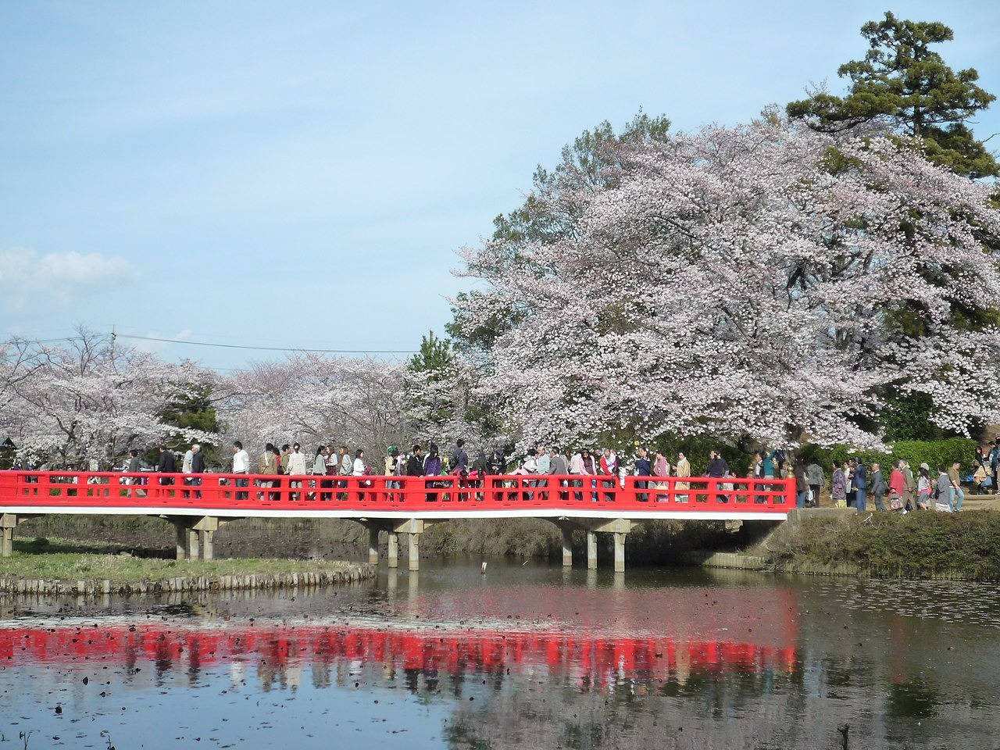
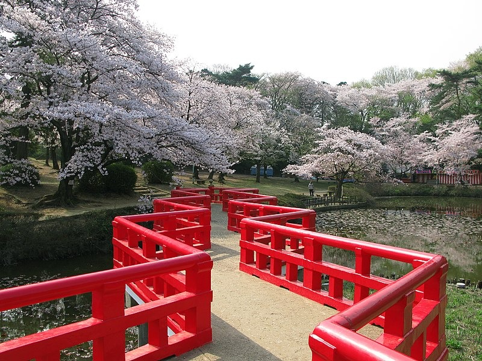
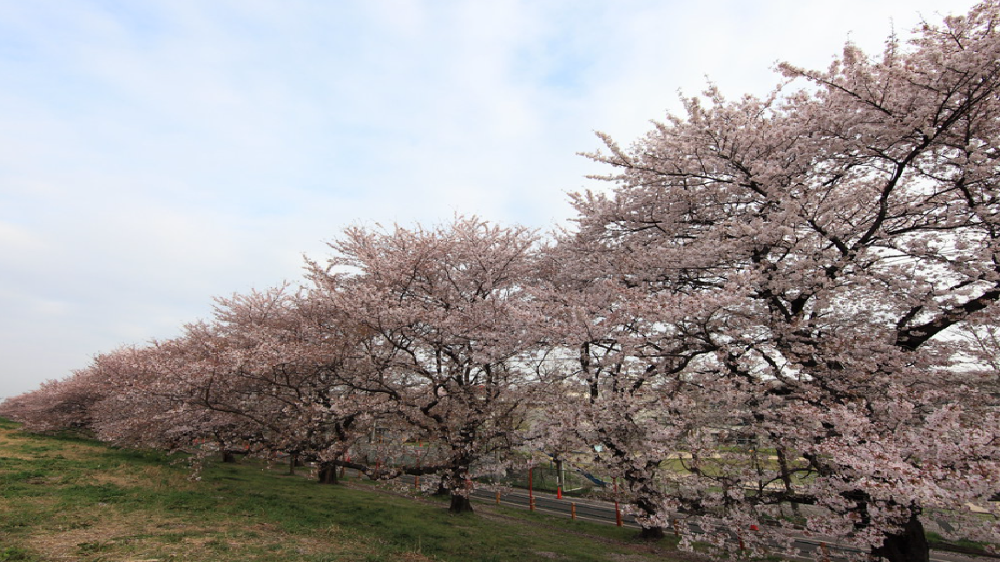
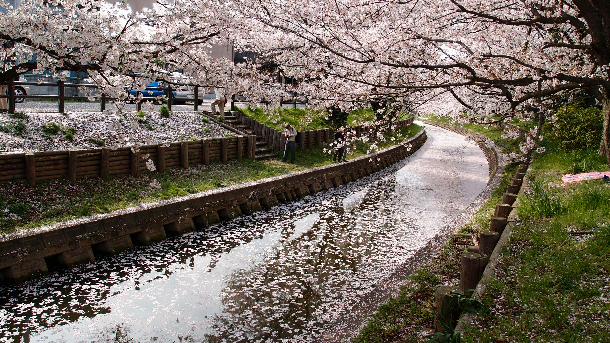
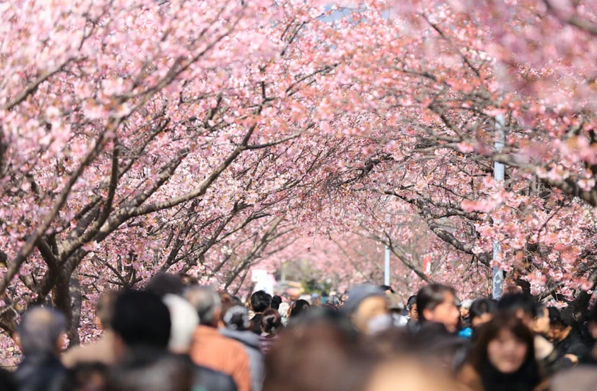
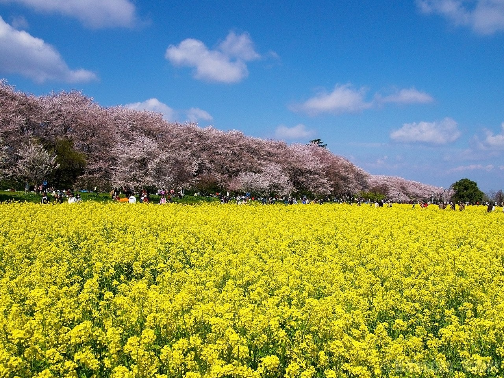
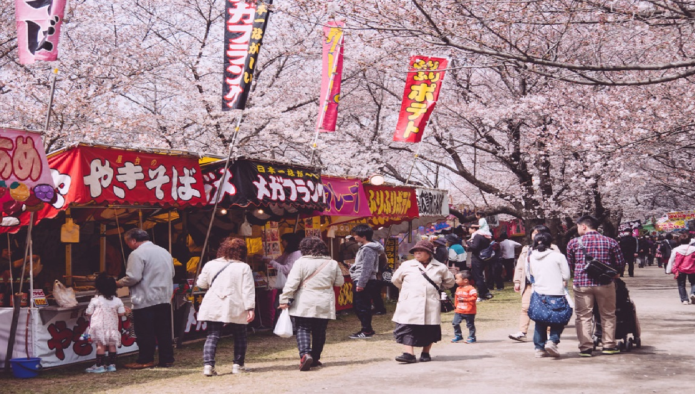

2024年の桜イベント
2024 年の桜イベントをご紹介します。
1.岩槻城址公園 桜の季節2024
2.熊谷さくら祭
3.黒目川桜まつり
4.五現堂の桜
これらのイベントは毎年同じ場所で開催されますので、もし行きたい方はぜひ遊びに行ってください。
1.岩槻城址公園 桜の季節2024:

Image by Fumihiko Ueno under CC BY 3.0
2024年岩槻城址公園の桜は、3月20日(水)から3月31日(日)まで開花します。桜の木に提灯が灯る日さらに、この期間中、午後 6 時から 9 時までの間、灯篭が夜間に点灯されます。期間中は、パーク内にフードトラックがあり、午前 10 時から午後 9 時まで食べ物や飲み物を購入できます。 岩槻城址公園には、約 600 本の桜が咲き誇っています。
そのほとんどは、公園内で有名な見事な赤い橋を背景に設置されています。園内には古い車両や人形時計などの絶景スポットが点在しています。公園には素敵な遊び場もあります。かつては県内有数の桜の名所として知られていました。それはまだある程度残っています。埼玉県の首都という立地もあり、安定した観光客数を誇っています。

Image by 京浜にけ under CC BY-SA 3.0
情報:
イベント：岩槻城址公園桜・祭り 岩槻城址公園桜・祭り
日程：※桜の状況や天候により変更となる場合がございます。
提灯・ライトアップは3月15日金曜日から3月24日日曜日まで午後6時から9時まで。
フードトラック – 3月20日水曜日から3月31日日曜日まで。
フェスティバル – 23日土曜日と24日日曜日。 営業時間は通常午前9時～午後9時、祭りは午前10時～午後4時。
料金 ：入場料はかかりません。
会場 ：〒339-0052 埼玉県岩槻区太田3丁目1番1号 岩槻城址公園。
桜アクセス 東武アーバンパークライン岩槻駅東改札口より徒歩約25分。
公式イベントページ
2.熊谷さくら祭:

Image by TANAKA Juuyoh (田中十洋) under CC BY 2.0
熊谷の桜の歴史は江戸時代からさかのぼることができます。約2キロメートルにわたって約500本の桜が咲き誇り、「さくら名所100選」にも選ばれています。季節によっては菜の花も咲き誇り、黄色と桜の色合いが美しいです。桜が散りばめられ、木々のそばで美しい写真を撮ることができます。

Image by TANAKA Juuyoh (田中十洋) under CC BY 2.0
情報:
イベント：熊谷さくらまつり2024 令和6年熊谷さくら祭
日程：2024年3月25日月曜日から4月7日日曜日まで。
時間：午前10時から午後9時まで
ライトアップ：午後6時から午後9時まで。
祭りの屋台: 通常、平均的な日には約 50 軒の祭りの屋台があり、繁忙期の週末にはさらに多くなります。
関連イベント：ハイキングイベントやライブなどがよく開催されます。長年にわたり、熊谷さくらよさこいが一度は出演してきましたが、残念ながら2021年をもって退団してしまいました。
料金: 入場料はありません。お祭りの屋台に行くため、円を持参してください。
アクセス：電車の場合はJR熊谷駅、秩父鉄道駅からすぐです。車の場合は関越自動車道東松山ICから車で約30分です。
駐車場：公共交通機関でのご来場をお勧めしますが、臨時駐車場もございます。これまでは無料でしたが、2023 年以降は特定の日に料金が発生します。 2024年は3月30日（土）、31日（日）の駐車場料金が1000円となります。
3.新河岸川:

東京の池袋地区から東武東上線でわずか 31 分、川越は桜と舟遊びの本拠地です。 多くの観光客がこの町を訪れる。川越では、氷川神社の裏手の新河岸川沿いの桜並木が最も美しい場所です。何千人もの人々が桜を見に来ていますが、以前は主に地元の人や外からの旅行者が来ていました。 桜の下の川に沿って手こぎボートを先導する写真を撮る機会があり、伝統的な菅笠と祭りの法被を着た男性は、桜の名所として人気があります。

Image by kazuend kazuend under CC0 1.0
アクセス:
4.五現堂の桜：

Image by Hiroaki Kaneko under CC BY-SA 3.0
幸手権現堂公園の成熟した桜と菜の花の美しいコントラストは、埼玉の春の象徴です。桜と菜の花の美しいコントラストを楽しむことができます。また、桜のトンネルも見ることができます。
幸手権現堂公園(第 4 公園)には、川岸に沿って約 1,000 本のソメイヨシノが咲き誇ります。この桜は驚くべきことに 1920 年に植えられました。当時は 3,000 本が植えられ、長さ 6 キロメートルでした。全国的な注目を集め、彼らの名声が始まりました。 初めて 1922 年に開花しました。この桜の名所は、翌年までにその評判が広まり、1923 年以来、高い評価を得ています。最近では河津桜も咲き始め、2 月下旬から 4 月上旬頃まで桜が見られます。
幸手桜まつり：

Image by annintofu under CC0 1.0
幸手の桜は、大宮、長瀞、熊谷などのさくら百選には含まれていませんが、その価値は高く評価されています。埼玉県内でも、権現堂公園の幸手桜まつりは有名です。幸手桜まつりにも歴史があります。 2020年は幸手桜まつりの90周年を迎えます。さらに、これは100年以上も続いています!当初、4月7日まで予定されていたが、桜の開花が遅れたため、14日まで延期されました。公園のサイトはまだこれを反映していませんが、幸手観光サイトには情報が掲載されています。
通常、4 月の第 1 週と 3 月の最終週には、1,000 本のソメイヨシノが咲きます。開花予想時期に合わせて開催日が決まっていますが、時期により変更になる場合がありますのでご了承ください。最初の予測が正しいかどうかによって決定されます。イベントは、2024年3月20日(水)から4月7日(日)まで開催されます。夜桜のライトアップも開催されます。ほとんどの場合、夜10時までライトアップされています。
情報:
イベント：第91回幸手桜まつり 第91回幸手桜まつり
会期：2024年3月20日（水）～4月7日（日） 桜の開花が遅かったため、会期を1週間延長しました。
営業時間: 24 時間営業、ただし駐車場は夜間は閉鎖されます (アクセスを参照)。
料金：無料
会場：〒340-0103 埼玉県幸手市内郷間887-3 権現堂公園（権現堂堤） Googleマップで見る。
アクセス:
公共交通機関をご利用の場合;東武日光線幸手駅からバスに乗ります。五霞町役場行き朝日バスです。 「権現堂」バス停下車。片道170円です。バス停は公園の南端にあります。電車でお越しの場合は、駅近くの「十万極幸手」で桜をテーマにした和スイーツを探してみませんか。 実は桜プリンには桜のエキスが使われているんです！
車の場合は圏央道幸手インターチェンジから車で約10分です。ペットの同伴は可能です。駐車場の営業時間は通常午前7時から午後10時までです。フェスティバルの正式期間中は駐車料金がかかりますのでご注意ください。
公式イベントページ